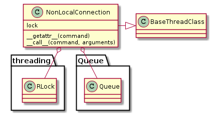
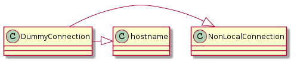

The Non-Local Connection is a Base for non-local connectionS (e.g. SSH or Telnet).
Calls to a NonLocalConnection takes the command-line command as a property and the arguments to the command as parameters.
| NonLocalConnection([command_prefix, lock, ...]) | A non-local connection is the base for non-local connections |
| DummyConnection(*args, **kwargs) | A dummy connection is used to fake connections in commands. |


| TestDummyConnection.test_constructor | |
| TestDummyConnection.test_call() | Can you call it and get no output or errors? |
| TestDummyConnection.test_dot_notation() | Does the dot-notation work? |